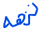
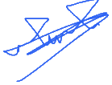

INES-Ruhengeri · SWE 3513 · Assignment 1 · Signed contributions
Group 03 · Group code AI-G03. Branch main. Repository https://github.com/Mogadi/AI_CAT
Final commit on this record: f38649d1e4db4b117384e7ac2379cd699bb44cd9
Dataset data/AI_A1_G03.csv. SHA-256 7125f66279f81011fafbb3b85ba1dcd6537c678de672d08516deaf6d870867f6
Group leader and Moodle submitter: Mohammed Osama Hasan, 25/27014.
Each person signs the page that lists their commits. A signature means they can explain those files and can make a small change to them in the live check. Confidential peer ratings are not written in this document.
| Requirement | Owner | Evidence |
|---|---|---|
| Data pipeline and vectorization | Nuzha ZainEl-Abdeen Mohammed Ismail | src/data_pipeline.py, data_report.json |
| Staff dashboard design | Nuzha ZainEl-Abdeen Mohammed Ismail | design/AI_A1_G03_UIUX.pdf |
| NumPy regression and gradient descent | Ehab Fakhralden Mohamed Hamid | src/regression.py, notes/regression_derivation.md |
| Dispatch-attention classifier and cost of errors | Mojtaba Abdalitieef Ahmed | src/classification.py, notes/classification_error_cost.md |
| Clustering, silhouette choice, QA log | Mohammed Osama Hasan | src/clustering.py, evidence/TEST_LOG.pdf |
| Run command, requirements, README, clean run | Lazarus Simboya Ira Inyasio | run_all.py, requirements.txt, README.md, notes/clean_run.md |
| Group dataset file and generated reports in git | Feras Saifaddin Ismail Mohammed | data/AI_A1_G03.csv, artifacts/, models/ |
predict.py is not in this commit. The demonstration video is not in this commit. Those two items are still open before the final Moodle upload.
Page 2 · Members 1 and 2
Data and UX lead. GitHub account nuzha0923-cloud.
Files: src/data_pipeline.py, src/__init__.py, tests/test_data_pipeline.py, design/AI_A1_G03_UIUX.html, design/AI_A1_G03_UIUX.pdf.
Commits on main:
2908aff4a18c2ef1c19b99b2afae22757802ec56 Add harvest dataset checks and the NumPy feature matrix.
18e91e4fdff3fc914734809dd9625cc0f59233c5 Add the HarvestLink dispatch desk design for staff decisions.
The design PDF was reprinted in f38649d so the cover states group code AI-G03 with no alternate group number.

2 / Oct / 2026Regression engineer. GitHub account ehabhamid42-ctrl.
Files: src/regression.py, tests/test_regression.py, notes/regression_derivation.md.
Commits on main:
a8c8c830e90b8845c3a36b7be7ee559bf43fc6c1 Add NumPy gradient descent for expected harvest weight.
78b3e771c42f8234d7c9c57a9a0215ede86f49a1 Add the gradient derivation for the harvest-weight model.
Evidence: loss history, MAE, RMSE, R-squared, and artifacts/regression_loss.png produced by run_all.py.
Page 3 · Members 3 and 4
Classification engineer. GitHub account ug2527660-afk. Email ug2527660@ines.ac.rw.
Files: src/classification.py, tests/test_classification.py, notes/classification_error_cost.md.
Commits on main:
9611ef923c3ecc49913799b19c0e807714458491 Add the dispatch-attention classifier and its evaluation scores.
4d6994043901a11dfeff22388615e6b6d21af66b Explain which dispatch-attention error costs the cooperative more.
Evidence: accuracy, precision, recall, F1, and artifacts/confusion_matrix.png. The costly cell is actual 1 predicted as 0.
Clustering and QA engineer. Group leader. GitHub account Mogadi.
Files: src/clustering.py, tests/test_clustering.py, notes/qa_test_log.html, evidence/TEST_LOG.pdf.
Commits on main:
95db5fcc58f8abbc2864ede1a2ff4c748677d923 Add silhouette-based clustering for the harvest input measures.
23a1843bfbba5dcb9fe81f4d191d8073049abab0 Record the cross-pipeline QA checks and what the full run still cannot prove.
The test log was updated in f38649d after run_all.py ran on data/AI_A1_G03.csv. Selected k is 3. A cluster is not a verified real-world category.
Page 4 · Members 5 and 6
Reproducibility and release lead. GitHub account lazarussimboya15-cpu.
Files: run_all.py, requirements.txt, tests/test_run_all.py, README.md, notes/clean_run.md.
Commits on main:
bf2b5cdcb41d3aa1aa66f13fe2b3742751031ac0 Add the command that reruns the harvest pipeline from one CSV.
54d14e14088e55bd5465fac135b5463bbc8f20e7 Document setup, the run command, and the clean virtual-environment check.
run_all.py and README.md were updated in f38649d so the documented file is data/AI_A1_G03.csv.
Prediction and demonstration lead. GitHub account ferassaifaddin6.
Commit on main:
f38649d1e4db4b117384e7ac2379cd699bb44cd9 Add the group 03 dataset and the reports produced from it.
Files in that commit: data/AI_A1_G03.csv, the eight files in artifacts/, and the three files in models/. The CSV follows the published nine-column schema. The reports were produced by run_all.py, not typed by hand.
Still open under this role: predict.py, and the unedited demonstration video.

2 / Oct / 2026Each signature is the member’s mark from the group 03 record. The date on every line is 2 / Oct / 2026. The group leader uploads this file as AI_A1_G03_CONTRIBUTIONS.pdf.